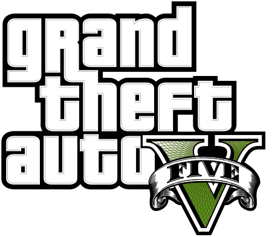

Quando um tratante inexperiente, um ladrão de bancos aposentado e um psicopata aterrorizante se envolvem com algumas das figuras mais assustadoras e problemáticas do submundo do crime, do governo dos EUA e da indústria do entretenimento, eles precisam realizar uma série de golpes ousados para sobreviver em uma cidade implacável onde não podem confiar em ninguém, nem mesmo um no outro.Os jogadores poderão transferir o progresso do Modo História do GTAV e os personagens e progresso atuais do GTA Online para o PS5 e o Xbox Series X|S com uma migração única.


Graficos deslumbrantes
Controles imersivos
Carregamento mais rápido
Nova seleção de carreiras
Áudio com profundidade 3D
Una-se a uns dos mercenários mais insanos de Los Santos e tome a cidade de volta em GTA Online: San Andreas Mercenaries.
Junte-se ao piloto e mercenário habilidoso Charlie Reed para liderar sua nova turma, os Los Santos Angels, em uma série
de contraoperações perigosas para desarmar e desestabilizar as forças impiedosas da Merryweather Security, com a chance
de você e seus amigos enriquecerem enquanto isso.
GTA Online: San Andreas Mercenaries está disponível para todos os jogadores de GTA Online para PlayStation 5,
PlayStation 4, Xbox Series X|S, Xbox One e PC.
Apresentamos Los Santos Drug Wars, o capítulo introdutório de uma nova atualização alucinante do GTA Online trazendo uma
trupe de rebeldes liderados pelo Dax, um cara vivendo no limite com altas esperanças de drogar o mundo, ficar rico e
alcançar o topo da pirâmide do crime do sul de San Andreas.
Aproveite seis novas missões insanas de história, onde você ajudará um excêntrico grupo de recém-chegados ao sul de
San Andreas a montar um novo esquema de venda de alucinógenos de alta qualidade de um novo quartel-general ambulante.
Além disso, aumente sua frota de veículos clássicos e contemporâneos e muito mais nessa primeira parte de Los Santos
Drug Wars – já disponível para PlayStation 5, PlayStation 4, Xbox Series X|S, Xbox One e PC.
Com uma onda de calor assando o sul de San Andreas, os preços da gasolina nas alturas e a economia à beira do colapso,
as coisas podem parecer difíceis...
Mas isso é Los Santos, aqui toda crise tem um lado bom. Os negócios estão bombando no mercado clandestino, com várias
oportunidades em The Criminal Enterprises, disponível no GTA Online para PlayStation 5, PlayStation 4, Xbox Series X|S, Xbox One e PC.
As Afiliações GTA+ podem ser adquiridas diretamente na
PlayStation Store, Microsoft Store ou dentro de GTA Online
no PlayStation 5 ou no Xbox Series X|S.
Você pode cancelar a renovação automática do GTA+ a
qualquer momento na loja do console em que a afiliação foi
adquirida.
Membros do GTA+ receberão GTA$500.000 depositados na
conta do Maze Bank toda vez em que uma cobrança for feita
pela Afiliação GTA+.

O que você está achando do GTA V? Compartilhe suas opiniões e
ideias para nos ajudar a moldar o futuro do jogo.